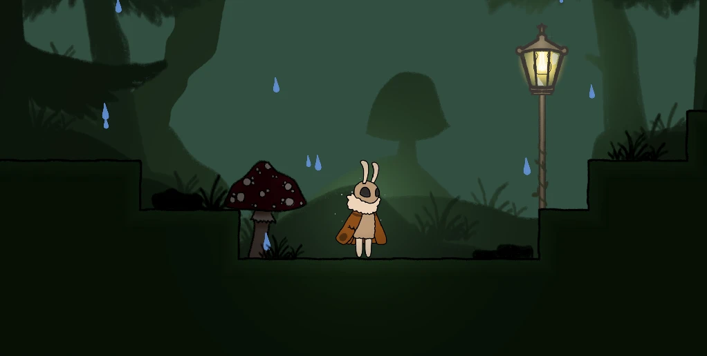

How to play

You heard a rumor about a so called 'tree of light'. To find it, you must follow glowing flowers, some bigger than others.
But be careful! You cannot endure total darkness for very long.
Therefore, quickly move from one light source to another so that the moth doesn't reach it's dark end.
HUD
 |
.png) |
 |
|
To make one thing clear. The yellow bar is NOT your health bar.
It is your light bar. It will drain over time and only refills, if you are near a light. The health bar is reprensented by the white moth head on the top left corner of your screen. If it's empty, you'll die. Due to your broken wing you can only flap them three times before you need to rest. |
This is how your healh, light bar and wing count will look like, when they get low. |
This is your score board. The upper one is your death counter. Make sure to keep it low. The middle one shows, how many eggs you collected in this level. The lower one is your timer, so you can try to speedrun this game. :) |
❮ ❯